assay-plate-qc-flag-column PASS 1.0
grade table_goldintent info_seekingdomain scientific_researchdifficulty d4ambiguity a4voice terseapps libreoffice_calcbatch wave2-main-s2
Update the plate sheet per the QC thresholds note beside it: add column E headed Result with each well's verdict, sort failing wells above passing ones, and put the failure count in G1.
task config + evaluator
{
"config": [
{
"type": "execute",
"parameters": {
"command": "mkdir -p '/home/user/Documents/assay' && rm -f '/tmp/__fixture.b64' && printf %s 'UEsDBBQACAgIAABoHF0AAAAAAAAAAAAAAAALAAAAX3JlbHMvLnJlbHOtks9qwzAMh+99CqN747SFMUacXsqgtzK6B9BsJTGJ/2BrW/b2M2OwdZSwwY6Wf/r0IdTsZzeJF0rZBq9gU9UgyOtgrO8VPJ7v17ewb1fNA03IJZIHG7MoPT4rGJjjnZRZD+QwVyGSLz9dSA65PFMvI+oRe5Lbur6R6TsD2gumOBoF6Wg2IM5vkX7DDl1nNR2Cfnbk+cqIH4lCxtQTK5gn+RrS+BTCWBUoyOsu27+6mAUXR4wGGaUOidYxFUhiS/nLqnSfSjl/JJa8dv+5I5qZvCGzrIQxfhqtGnlxC+07UEsHCGu/dgTfAAAAQgIAAFBLAwQUAAgICAAAaBxdAAAAAAAAAAAAAAAADwAAAHhsL3dvcmtib29rLnhtbI1SyW7bMBC99ysE3m0tTlTHsBy4coQE6BLEaXIsKGlksaZIgRxvLfrvHVFWkqI99CCRs/DNm5k3vz420tuDsUKrhIXjgHmgCl0KtUnY18dsNGWeRa5KLrWChJ3AsuvFu/lBm22u9daj98omrEZsZ75vixoabse6BUWRSpuGI5lm49vWAC9tDYCN9KMgiP2GC8V6hJn5HwxdVaKAlS52DSjsQQxIjsTe1qK1bDGvhISnviGPt+1n3hDtlMuC+YsX2vfGy3mx3bUZZSes4tICNVrrw5f8OxRIHXEpmVdyhFQ3LVXIhRR4GnL/wNJIT6geOTvHk4CDfY13poO+1Ub80Aq5XBdGS5kwNLtzWWKMovhXZN1N7JHndnAen4Uq9SFhtKvTm/vBXZ9FiTVtMp5MLwbfLYhNjQmbhlcR85DnD93EEhYH9KwSxqIr4lA4dbIHqtdZ1JD/piO3vOH0lJtsS9OHb91qSTK2o0yxu5IYOOEgpeyFFbkk5mYmKGDuysghD3DUdkELEQjGjXuniErYcTNQfdIlQSwJ7Rx/2dbZXoFETmTHQRB2sHDEjxbdeZaW1HT/S15S5AZ6QTltMW9nRMJ+vo+jOJ3G0ShahpNRGN5cjj5MLi5H2U2W0QDTVXqV/SKdOdQZfWlP36KhCTxAtT7Rio+95paOkk9Z/d8x8wdlLH4DUEsHCBXaYYYDAgAAfwMAAFBLAwQUAAgICAAAaBxdAAAAAAAAAAAAAAAADQAAAHhsL3N0eWxlcy54bWztWF1P2zAUfd+vsPw+kpZSYEqDGKjTXia0lmnStAeTOImHPyLbhYZfz3WcpkkLTOoeVqQ+2ff4nuOTa1u1G10sBUcPVBum5AQPjkKMqExUymQ+wbfz6cczjIwlMiVcSTrBFTX4Iv4QGVtxOisotQgUpJngwtryUxCYpKCCmCNVUgkjmdKCWAh1HphSU5IaRxI8GIbhOBCESRxHciGmwhqUqIW0YKOFkG++pgCORxh5uSuVgpUvVFJNOA7iKGgE4ihTcq0zwh6II/OEHggHkdClSyKoj6/pH/JjgWZEGjeQEcF45YeGtbCnvy1yqZm30aWHe0OvG1caxnlbmiH2QByVxFqq5RQC1PTnVQn1lbDgXqbO+0t2rkk1GJ50CHUD894pncIG6y6uh1DKSK4k4bflBGeEG4pb6Fo9yhUYR5xmFoQ1ywvXWlUGTsRaJaCz4ripvXLbgekTyvnM7daf2frrQxBdZtu7S9YBHALnvel6pSYgZcmrqXIiVi9oA3yuU3rQJWe5FHQj8UYrSxNbH7YajiOySkSF0uwJpN0C5s3mdmfTssRB/nsxsnRpvytLvAp4etSknAPYFpHJtJ4Yxkyhmbyfqylrh6FMZWsDcZXc03RlsmApUDuZwTLbqFS4rtNg1zo1PjcL1YW7lVptg/djZngw84qZnc/WwczBzMHMwczBzC5mRsf79Es5GuyVm9FeuRnuk5vz/2wm6F7f/WW+c48f7HqNX2bbzrt+/tH6O7jTB00pOw+ktqxj3EGRe2pO8Df38uadyt0tGLdM+ijYJlwpIcgqf3DSIxy/SkC/wt8tadwjjV8kLbSmMqlazmmPM3qL05vrrMc7fYl3Q3UCa9BSznsU//RdFxOC9Z8k8TNQSwcIP9SAxZECAABpEQAAUEsDBBQACAgIAABoHF0AAAAAAAAAAAAAAAAYAAAAeGwvd29ya3NoZWV0cy9zaGVldDEueG1svVhNb9s4EL3vrxB06GlrfVj+Sm0Xjb3ZFkibYJ22wN5oiYq5kUSVpOwkv36HlCzJJLPIAoF9sK3h08y8N9KImvnHxzxz9phxQouFGwx818FFTBNS3C/c73dX76euwwUqEpTRAi/cJ8zdj8vf5gfKHvgOY+GAg4Iv3J0Q5YXn8XiHc8QHtMQFrKSU5UjAIbv3eMkwStRJeeaFvj/2ckQKt/ZwwV7jg6YpifGaxlWOC1E7YThDAtLnO1Lyo7fH5FX+EoYOQPWYTy/Fdb3S+gsiw19OYkY5TcUgpnmTmsly5s1OeObxaxLLEXuoyvfguARyW5IR8aRydJdz5fyWOSnJBGZfaQJ1SVHGMayV6B5vsPheqnVxR2/BcFz2lnOvOXk5TwhIKMvuMJwu3E/BxToYSohC/CD4wHv/Hb6jhytIsMoQP/pTxj8ZSa5JgcEqWNUY/6KHFc0+gxJwafUX/sYg2dHAyP0OUrzGqWhdCrTd4AzHAif9824qkUGQzVO+pVnrIMEpqjIhU4BwlB3te8h44RZSzwxc0lKGWOEskzxdJ5bYL+B/HLnOM6X5JkYZqBT4fu/4mzpdt0o9r9ETrZQs4AIW5c2wpfRBWqRbXxZJkZDylkjeOE0SroPAusddMt1xfarDfzUF6eolHff/Hytzpa4YKHUjBIjwkyRiJ5Me+NPQHwbhqJUJivIZS8lhORzAjf0MxThaGvlprfM13uMM8Cqhvg0i1Py8kwSWc9CUq2+pboZKLuvXOI0rLmjeZFZXaEeSBBfWsCpmjh4hS/glhfrl4klWSIpdu4kGk6kU6G0jhk3E0BJxNoiCt484bCIOLRHHA6jem0eMmoiRJeJoMFWqenU5606IBFrOGT04TJWijltXvg3VXVRaDjX6P64yFd5gB6RlOHmDcIWAkzlY90t/7u1lgg3i0kQEp4iViQhPEWsTMWwRHjBv6Ydnph8aiUUafRMx0uj3EUUtIVzJugQ2lD8K7DIMzyzD0CA51mQwERNNhqGFYDCdajLYUH40s8sQnVmGyCCppX9pImaaDJGF4MzXrpm1DeWPQrsMozPLMDLveL0pWCB6VxhZKIbDoSaEDdVT60SH8Zl1GJsktbv60gLRGK7GFobjiabW2obyo6ldiMmZhZiYLPU2aYHofXJiaxCR5mhtQ73YJ6dnFmJqstQbpQWid8qpheJEb5Q2kB9N7DrMzqzDzCSpd0oLRG+VMwvFoa+h1jbUSx0i8M+9ffLNvY+xgbJgjC2Ub2E5Co19lA324uMzOPtm0rIT1DumDaO3zBNMS3M20dWwwl56igbn3lsG5tYx1NumDaP3zcC2dZxG+pbCCnvxERKce4sZmDvIUO+dNozePAPbDjIcjXU1rBtN4zni9d7ASkYKcVOqUZezw0jO6LpRzH03htEtGyzaF0TKyDMtBMpWuBCY9V4n95gJEpsLXj1U+orYPYHAmRrWyAfCZNRMcLpDQUs1RByFk/YDldpSAaWxrezUhKhzkFIqesdeO9CqSqdEJWYb8ozV84T3RjZq0HUcfDSH7aTDdaSLG6biJPRQ3O1wcQNs4epgBMiq4eHCLSkTDBEB6WYofvhUJD93RLSzMydhqDeminGWrWgup5BcTpoKLOMyLuR86FuVb3H9slxxfKWb9VKsSwKvVJLIsQadJaYlkTVVk4darSulkZOQNIU6FUL579I8mm+S5I99d38s5zRJ6oHc8h3Kyw8r9f3uV0XFhzX+B/2onA1mJP39ktKH2qwQQah+Ps29zoH0Vafxf31JHRz1/1Y5bLzMvT43OGzny8t/AVBLBwgJFLEiRwUAAKMWAABQSwMEFAAICAgAAGgcXQAAAAAAAAAAAAAAABoAAAB4bC9fcmVscy93b3JrYm9vay54bWwucmVsc62RTWvDMAyG7/0VRvfFSQdjjDi9jEGv/fgBxlHi0MQ2kta1/34uG1sKZezQk9DX875I9eo0jeqIxEMMBqqiBIXBxXYIvYH97u3hGVbNot7gaCWPsB8Sq7wT2IAXSS9as/M4WS5iwpA7XaTJSk6p18m6g+1RL8vySdOcAc0VU61bA7RuK1C7c8L/sGPXDQ5fo3ufMMgNCc1yHpEz0VKPYuArLzIH9G355T3lPyId2CPKr4OfUjZ3CdVfZh7vegtvCdutUH7s/CTz8reZRa2v3t18AlBLBwhP8Pl60gAAACUCAABQSwMEFAAICAgAAGgcXQAAAAAAAAAAAAAAABQAAAB4bC9zaGFyZWRTdHJpbmdzLnhtbJWUwUrEMBBA735FyX033SoiS5ulLYggnlQ8h3a2DSaTmkkX/Xuj0OJJpsckL2/gHaY8fTqbXSCQ8ViJwz4XGWDne4NDJV5f7nd3IqOosdfWI1TiC0ic1FVJFLP0FakSY4zTUUrqRnCa9n4CTC9nH5yO6RgGSVMA3dMIEJ2VRZ7fSqcNiqzzM8ZKFGnIjOZjhna9UCUZVf4OOdKkuzQ7WQjCBYR6A2tLGVUpf6B/wGftJgs81AyoedbGanxnkfWBhT0CxQB2l/Pwuthm5eH19TYrD69vtll5eMML9aBDMBC4XRteqNXKwxteqNXKwxteqNXKw1teqCcI1iA3a8vrtEh5dMvLtEh5dMurtEj/0DItRPUNUEsHCDeZVBATAQAATgUAAFBLAwQUAAgICAAAaBxdAAAAAAAAAAAAAAAAEQAAAGRvY1Byb3BzL2NvcmUueG1sbZHNTsMwEITvPEXke+IEJISiJJU4cKISUqnE1djb1MV/srdN+/Y4CTVF5LYz+3ls7zars1bZCXyQ1rSkKkqSgeFWSNO3ZPv+kj+RLCAzgilroCUXCGTV3TXc1dx6ePPWgUcJIYtBJtTctWSP6GpKA9+DZqGIhInNnfWaYZS+p47xL9YDvS/LR6oBmWDI6BiYu5RIfiIFT5Hu6NUUIDgFBRoMBloVFf1lEbwOiwemzg2pJV4cLKLXZqLPQSZwGIZieJjQ+P6KfqxfN9NXc2nGUXEgXSN4zT0wtL5r6K2ItYDAvXQYRz43/xhRK2b6Y5xPBybfbiYkWePkFQu4jjvaSRDPl5ix4EXLw0mOe+3KiUhyvCIcPw/Acb4/iVijRAWzfS3/7br7BlBLBwgty4yUJwEAADcCAABQSwMEFAAICAgAAGgcXQAAAAAAAAAAAAAAABAAAABkb2NQcm9wcy9hcHAueG1snZBNb8IwDIbv+xVVxLVNKBsglAZtmnZC2g4d2q3KEhcy5UtJisq/XwANOM8n+7X12H7pejS6OECIytkGTSuCCrDCSWV3Dfps38olKmLiVnLtLDToCBGt2QP9CM5DSApikQk2Nmifkl9hHMUeDI9Vbtvc6V0wPOUy7LDreyXg1YnBgE24JmSOYUxgJcjSX4HoQlwd0n+h0onTfXHbHn3mMdqC8ZonYBTf0tYlrltlgJEsXwv67L1WgqfsCNuo7wDv5xV4Uc2qRVVPNsoOY/e1nHfzx+JuoMsv/IBIeEYmL4PSsqwpvoedyNuL1Wz6VJEc54E/jeKbq+wXUEsHCBnnNer5AAAAmgEAAFBLAwQUAAgICAAAaBxdAAAAAAAAAAAAAAAAEwAAAFtDb250ZW50X1R5cGVzXS54bWy9VDtPwzAQ3vsrIq8odsuAEEragccIlSgzMvElMY0fst3S/nvOKVRVCSmIiMmy776XT3Y226gmWYPz0uicTOiYJKALI6SucvK0uEsvyWw6yhZbCz7BXu1zUodgrxjzRQ2Ke2osaKyUxikecOsqZnmx5BWw8/H4ghVGB9AhDZGDTLMbKPmqCcntBo93uggnyfWuL0rlhFvbyIIHLLNYZZ04B43vAa61OHKXfjijiGx7fC2tP/tewerqSECqmCyedyNeLXRD2gJiHvC6nRSQzLkL91xhA3uOSRgdOE+X0qZhb8YtX4xZ0v5r71AzZSkLEKZYKYRQbx1w4WuAoBrarlRxqU/o+7BtwA+t3pL+IHkL8KxdJgOb2POf8LEb9+Ec/mn0vuYOxGNw+L4Hn8Ahd58PxM+dsR5/Bge/N/GZO6JTi0Tgguwf/V4Rqf+cGuJbFyC+ao8y1n6U03dQSwcIj/blNlkBAABXBQAAUEsBAhQAFAAICAgAAGgcXWu/dgTfAAAAQgIAAAsAAAAAAAAAAAAAAAAAAAAAAF9yZWxzLy5yZWxzUEsBAhQAFAAICAgAAGgcXRXaYYYDAgAAfwMAAA8AAAAAAAAAAAAAAAAAGAEAAHhsL3dvcmtib29rLnhtbFBLAQIUABQACAgIAABoHF0/1IDFkQIAAGkRAAANAAAAAAAAAAAAAAAAAFgDAAB4bC9zdHlsZXMueG1sUEsBAhQAFAAICAgAAGgcXQkUsSJHBQAAoxYAABgAAAAAAAAAAAAAAAAAJAYAAHhsL3dvcmtzaGVldHMvc2hlZXQxLnhtbFBLAQIUABQACAgIAABoHF1P8Pl60gAAACUCAAAaAAAAAAAAAAAAAAAAALELAAB4bC9fcmVscy93b3JrYm9vay54bWwucmVsc1BLAQIUABQACAgIAABoHF03mVQQEwEAAE4FAAAUAAAAAAAAAAAAAAAAAMsMAAB4bC9zaGFyZWRTdHJpbmdzLnhtbFBLAQIUABQACAgIAABoHF0ty4yUJwEAADcCAAARAAAAAAAAAAAAAAAAACAOAABkb2NQcm9wcy9jb3JlLnhtbFBLAQIUABQACAgIAABoHF0Z5zXq+QAAAJoBAAAQAAAAAAAAAAAAAAAAAIYPAABkb2NQcm9wcy9hcHAueG1sUEsBAhQAFAAICAgAAGgcXY/25TZZAQAAVwUAABMAAAAAAAAAAAAAAAAAvRAAAFtDb250ZW50X1R5cGVzXS54bWxQSwUGAAAAAAkACQA/AgAAVxIAAAAA' >> '/tmp/__fixture.b64' && base64 -d '/tmp/__fixture.b64' > '/home/user/Documents/assay/plate_readings.xlsx' && rm -f '/tmp/__fixture.b64' && printf %s 'QXNzYXkgUUMgdGhyZXNob2xkcwoKQ29ycmVjdGVkIHNpZ25hbCA9IFNpZ25hbCBtaW51cyBCbGFuay4KQSB3ZWxsIEZBSUxTIGlmIGl0cyBjb3JyZWN0ZWQgc2lnbmFsIGlzIGFib3ZlIDAuNTAwLgpPdGhlcndpc2UgdGhlIHdlbGwgUEFTU0VTLgpDb2x1bW4gRSBpcyBoZWFkZWQgUmVzdWx0IGFuZCBob2xkcyBQQVNTIG9yIEZBSUwuCkZhaWxpbmcgd2VsbHMgYXJlIGxpc3RlZCBmaXJzdCwgdGhlbiBwYXNzaW5nIHdlbGxzOyBpbnNpZGUgZWFjaCBncm91cCBrZWVwIHRoZSBvcmlnaW5hbCB3ZWxsIG9yZGVyLgpHMSBob2xkcyB0aGUgbnVtYmVyIG9mIGZhaWxpbmcgd2VsbHMuCg==' >> '/tmp/__fixture.b64' && base64 -d '/tmp/__fixture.b64' > '/home/user/Documents/assay/qc_thresholds.txt'",
"shell": true
}
},
{
"type": "open",
"parameters": {
"path": "/home/user/Documents/assay/plate_readings.xlsx"
}
}
],
"evaluator": {
"func": "compare_table",
"result": {
"type": "vm_file",
"path": "/home/user/Documents/assay/plate_readings.xlsx",
"dest": "assay-plate-qc-flag-column-result.xlsx"
},
"expected": {
"type": "cloud_file",
"path": "http://127.0.0.1:8021/wave2-main-s2/files/assay-plate-qc-flag-column/gold/plate_readings.xlsx",
"dest": "assay-plate-qc-flag-column-gold-ed17ca72.xlsx"
},
"options": {
"rules": [
{
"type": "sheet_data",
"sheet_idx0": "RI0",
"sheet_idx1": "EI0"
}
]
},
"postconfig": [
{
"type": "activate_window",
"parameters": {
"window_name": "plate_readings.xlsx - LibreOffice Calc",
"strict": true
}
},
{
"type": "sleep",
"parameters": {
"seconds": 0.5
}
},
{
"type": "execute",
"parameters": {
"command": [
"python",
"-c",
"import pyautogui; pyautogui.hotkey(\"ctrl\", \"s\");"
]
}
},
{
"type": "sleep",
"parameters": {
"seconds": 0.5
}
}
]
}
}
step 1 10:07:54
THINKINGI need to understand the task. There's a "plate" sheet with a QC thresholds note "beside it". The visible sheet is "plate_readings". I need to find the "plate" sheet and the QC thresholds note. Let me take a screenshot first to see the current state, and look for other sheets or notes.
The current tab shown is "plate_readings". The task says "Update the plate sheet per the QC thresholds note beside it". I need to find where the QC thresholds are defined. Let me look more carefully - maybe there's a note in cells to the right, or another sheet. Let me first take a screenshot to confirm the current state and explore.
ACTIONI'll start by exploring the workbook to find the "plate" sheet and the QC thresholds note. Let me take a screenshot first.
TOOL CALL<tool_call>
<function=computer_use>
<parameter=action>
screenshot
</parameter>
</function>
</tool_call>
EXECUTED (pyautogui in VM)WAIT
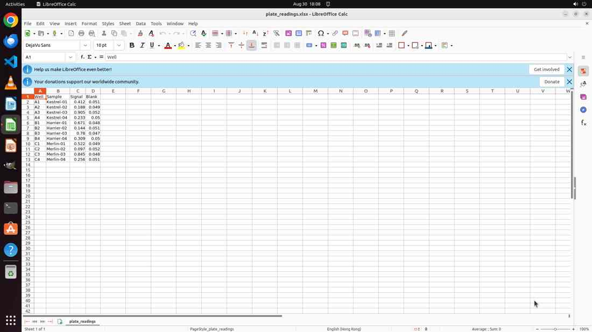
step 2.1 10:08:10
THINKINGThe current sheet tab is "plate_readings" but the task refers to a "plate" sheet with a "QC thresholds note beside it". There's only one tab visible: "plate_readings". The "note beside it" might be cells to the right of the data (columns F, G, etc.) that contain the QC thresholds. Let me scroll right to look for the note, since the data ends at column D. Let me check columns F-H area for a note.
Actually, "beside it" likely means to the right of the data table. Let me look. The data is A1:D13. Columns E, F, G are where I'll add Result and G1. But the note could be further right. Let me scroll right to inspect. Let me click somewhere and scroll right to see if there's a QC note.
Let me examine the area to the right. I'll scroll right to check columns F through J for a note.
ACTIONI can see the "plate_readings" sheet with data in A1:D13. The task mentions a "QC thresholds note beside it" — this is likely located to the right of the data. Let me scroll right to find it.
TOOL CALL<tool_call>
<function=computer_use>
<parameter=action>
mouse_move
</parameter>
<parameter=coordinate>
[468, 416]
</parameter>
</function>
</tool_call>
<tool_call>
<function=computer_use>
<parameter=action>
scroll
</parameter>
<parameter=pixels>
10
</parameter>
</function>
</tool_call>
EXECUTED (pyautogui in VM)pyautogui.moveTo(899, 449)
step 2.2 10:08:14
EXECUTED (pyautogui in VM)pyautogui.scroll(10)

step 3 10:08:30
THINKINGThe scroll didn't move because it's already at the leftmost. There's no note visible in the columns to the right on this sheet. The task says "the plate sheet" and "QC thresholds note beside it". The visible sheet is "plate_readings" — this is the only tab. The note "beside it" might mean on a different sheet, or there's a cell comment, or the note is in a cell to the right that I haven't scrolled to. The scroll right didn't change the view (still showing A as first col), which is odd — maybe scroll amount was small.
Actually the task calls it "the plate sheet" — the sheet tab might be named differently. But there's only one tab "plate_readings". The note "beside it" could be in cells further right. Let me use the Name Box to jump to a location like F1 to check, or better, let me check if there's text in the area. Let me click on cell H1 or look around. Actually, let me jump to a cell far right to find the note. Let me use the Name Box to go to "F1" to see columns around there.
Wait - maybe the note is in a cell to the right but empty-looking. Let me click on cells F, G, H rows to check. Better: let me examine using the terminal to read the xlsx? No, I should use GUI. Let me just check specific cells. Let me click F2 area and read the formula bar. Actually, more efficient: use Name Box to navigate. Let me type "G1" in name box.
Let me think about "beside it" - the note is beside the plate. The data columns are A-D. A note beside could be starting at column F or G. But I need G1 for failure count. So the note is probably further right, like columns H+ or could be a text comment. Let me scroll right more aggressively.
ACTIONThe view didn't move. Let me check if there's a note in cells to the right by clicking on a cell further out, and also verify there's only one sheet. Let me navigate using the Name Box to inspect cells to the right.
TOOL CALL<tool_call>
<function=computer_use>
<parameter=action>
left_click
</parameter>
<parameter=coordinate>
[78, 170]
</parameter>
</function>
</tool_call>
EXECUTED (pyautogui in VM)pyautogui.click(149, 183)
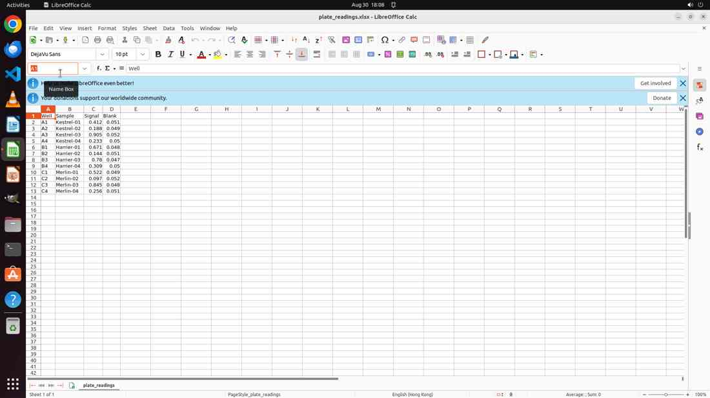
step 4 10:08:40
THINKINGI clicked the Name Box. Let me navigate to a cell far to the right to find the QC thresholds note. Let me type "F1" and press Enter, then I can inspect. Actually, let me jump to a likely location. The note "beside" the plate data could be around column F-H. Let me type F1 first.
Actually, a more efficient approach: let me check the cell contents to the right. But I don't know where the note is. Let me first try navigating to F1, then G1, etc. Or I could scroll the horizontal scrollbar far right. Let me type "J1" in the name box to jump right and look for the note.
Let me navigate to F1 to see what's there.
ACTIONI'll navigate to a cell to the right of the data to look for the QC note. Let me jump to F1.
TOOL CALL<tool_call>
<function=computer_use>
<parameter=action>
type
</parameter>
<parameter=text>
F1
</parameter>
</function>
</tool_call>
EXECUTED (pyautogui in VM)pyautogui.typewrite("F1")
step 5 10:08:48
THINKINGThe name box shows "F1|" with a cursor - it seems the type didn't commit with Enter properly, or it's showing "F1" as autocomplete. The formula bar still shows "Well" which was A1's content. Actually it shows "F1|" meaning F1 is typed but not yet entered. Wait, the newline should have entered it. But formula bar still shows "Well". Let me just press Enter again to commit navigation.
Actually the issue is the name box still has focus and shows "F1". Let me press Enter.
ACTIONThe name box shows "F1" pending. Let me press Enter to navigate there and see the cell's content.
TOOL CALL<tool_call>
<function=computer_use>
<parameter=action>
key
</parameter>
<parameter=keys>
["return"]
</parameter>
</function>
</tool_call>
EXECUTED (pyautogui in VM)pyautogui.press("return")
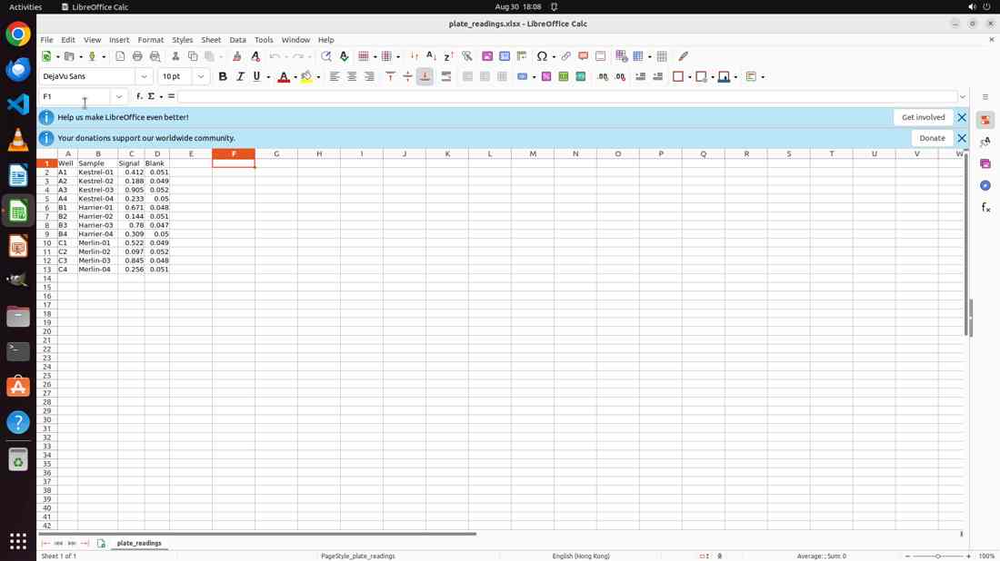
step 6 10:08:59
THINKINGF1 is empty (formula bar is blank). So the note isn't in F. The note "beside it" — maybe it's further right, or maybe there's a hidden area, or it's in a cell comment. Let me think about where a QC thresholds note could be. It could be:
1. In cells to the right (columns H, J, etc.)
2. In cells below the data
3. A cell comment attached to some cell
4. On a different sheet (but only one tab exists)
Let me use a smarter approach. I'll use the terminal to inspect the xlsx file to find where the note is. Actually, the instruction says to use GUI. But finding the note via reading is fine — I can open a terminal and use a tool to dump the file. However, the guidance discourages using CLI to *complete* tasks, but reading/inspecting to understand is reasonable. Still, better to keep it in GUI.
Let me think: "the QC thresholds note beside it". The data table is A1:D13. "Beside" = to the side. It's probably in columns F-H at some rows. F1 is empty. Let me check a wider range. Let me navigate and use Ctrl+End to find the extent of used cells — that will reveal where the note is.
Let me press Ctrl+End to jump to the last used cell.
ACTIONF1 is empty. Let me find the extent of used cells to locate the note by pressing Ctrl+End.
TOOL CALL<tool_call>
<function=computer_use>
<parameter=action>
key
</parameter>
<parameter=keys>
["ctrl", "end"]
</parameter>
</function>
</tool_call>
EXECUTED (pyautogui in VM)pyautogui.hotkey("ctrl", "end")
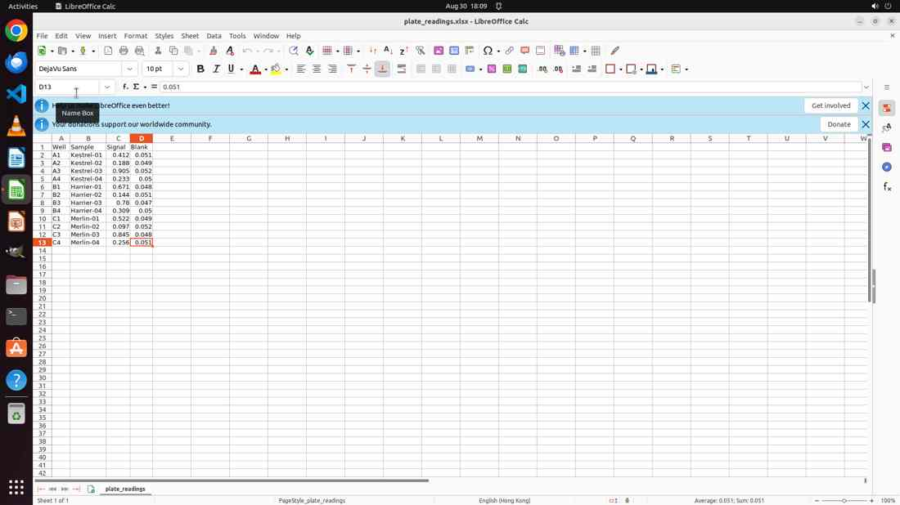
step 7 10:09:19
THINKINGCtrl+End went to D13, meaning the used range on this "plate_readings" sheet is only A1:D13. So there's no note on this sheet. The note "beside it" must be on a different sheet. But I only see one tab "plate_readings".
Wait — maybe there are more sheets but only one is visible and it's cut off. Let me check the sheet tabs area. Currently only "plate_readings" tab shows. Let me look for a "plate" sheet. The task says "Update the plate sheet" — implying there's a sheet called "plate". Maybe the sheet tabs are scrolled or there's another. Let me look at the bottom — I only see "plate_readings".
Hmm. But "QC thresholds note beside it" — "beside" the plate sheet could mean a cell comment. Or the note might be a comment attached to a cell. Let me check for comments. Actually, let me reconsider: maybe the note is in a cell that's formatted but Ctrl+End only shows D13. Comments don't extend used range necessarily.
Let me reconsider. Perhaps the "note" is a cell comment. Let me check cell A1 which is the header "Well" — maybe it has a comment. Or the note could be a comment on the sheet name.
Actually, re-reading: "Update the plate sheet per the QC thresholds note beside it". The current sheet tab is "plate_readings" not "plate". So maybe there IS a "plate" sheet and I'm misreading. The tab clearly says "plate_readings".
Let me check if there are more sheets. Let me scroll the sheet tab bar or look. There's a sheet navigation area at bottom left with arrows. Let me look — I see only one tab. Let me click the sheet navigation arrows to check for hidden/additional sheets.
Actually, let me reconsider the whole thing. The task might be self-contained on this one sheet, and the "note beside it" is a cell comment. Let me check for comments by looking at cells. The most likely place for a "note" is as a comment. Let me check cell A1 or the header.
Alternatively "beside it" could refer to a text box / shape on the sheet. There might be a drawing/text box that's not part of cell range. Let me look at the current view — I don't see any text box.
Let me check for cell comments. I'll use Sheet menu > ... no. Let me just click on cells and check. But which cell? A QC thresholds note would likely be near the data. Let me check if there's a comment on A1 or D1 or a header.
Actually, the best approach to definitively find the note is to inspect the file. But let me first check sheet tabs more carefully by clicking the "previous/next sheet" arrows at bottom-left. Let me look — there are arrows at ~70,691 and ~100,691. Let me check if there are multiple sheets by scrolling the tab area.
Given the used range is only A1:D13 and there's one visible tab, the "note" is most likely a cell comment. Let me check cell comments. I'll right-click on a cell to see if there's a comment, or I can view Sheet > Cell Comments.
Let me first verify there's only one sheet. Let me click the sheet tab navigation. Actually, let me just check A1 for a comment since header is a common place. Let me click A1 and look for a small red triangle (comment indicator). In the screenshot A1 "Well" - I can't clearly see a triangle.
Let me take a different, definitive approach: open a terminal and inspect the xlsx to locate the note (text). This is just for reading/understanding, then I'll do the edits in GUI. This is the most reliable way to find the QC thresholds. Let me open the terminal app.
ACTIONThe used range is only A1:D13 on this sheet, so the note isn't in the cell grid here — it may be a cell comment or on another sheet. To locate the QC thresholds note reliably, let me inspect the file contents via a terminal (read-only inspection).
TOOL CALL<tool_call>
<function=computer_use>
<parameter=action>
key
</parameter>
<parameter=keys>
["ctrl", "home"]
</parameter>
</function>
</tool_call>
EXECUTED (pyautogui in VM)pyautogui.hotkey("ctrl", "home")
step 8 10:09:27
THINKINGLet me open a terminal to inspect the xlsx file. I'll look for a terminal app in the taskbar (there's a dark terminal-like icon at ~22,447). Let me click it. Actually, let me use the Files/terminal. I see a terminal icon on the left dock at around y=447. Let me click it.
ACTIONLet me open a terminal to inspect the file's contents and find the QC note (which may be a cell comment).
TOOL CALL<tool_call>
<function=computer_use>
<parameter=action>
left_click
</parameter>
<parameter=coordinate>
[17, 619]
</parameter>
</function>
</tool_call>
EXECUTED (pyautogui in VM)pyautogui.click(32, 669)
step 9 10:09:38
THINKINGTerminal is open. Let me inspect the xlsx. I'll find the file and unzip it to look at sharedStrings and sheet XML, plus comments. Let me run a command to locate the file and dump strings. First find the file.
ACTIONTerminal is open. Let me locate the file and inspect its contents (strings and any comments) to find the QC thresholds note.
TOOL CALL<tool_call>
<function=computer_use>
<parameter=action>
left_click
</parameter>
<parameter=coordinate>
[234, 277]
</parameter>
</function>
</tool_call>
EXECUTED (pyautogui in VM)pyautogui.click(449, 299)
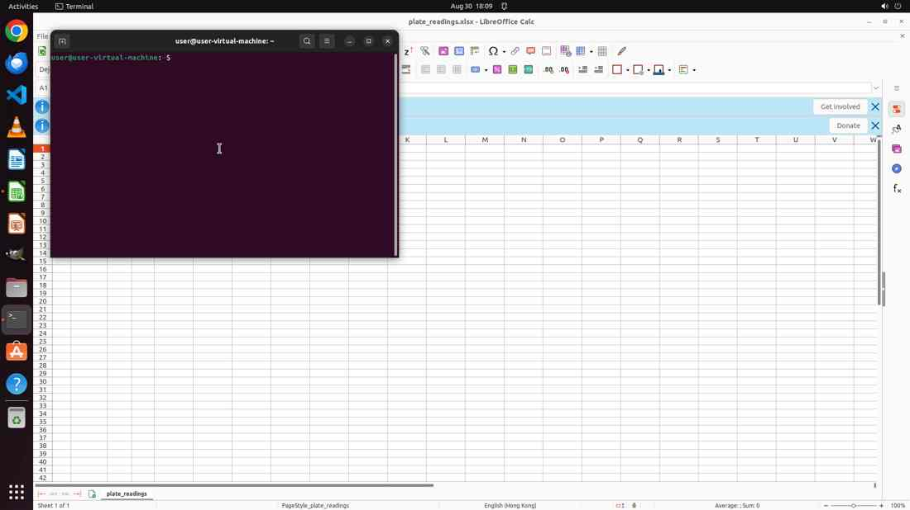
step 10 10:09:48
THINKINGI'll run a command to find the file and inspect. Let me find the xlsx, then extract sharedStrings.xml and any comment files, and list all files in the zip. Let me type a combined command.
TOOL CALL<tool_call>
<function=computer_use>
<parameter=action>
type
</parameter>
<parameter=text>
cd ~ && F=$(find / -name plate_readings.xlsx 2>/dev/null | head -1); echo "$F"; mkdir -p /tmp/px && unzip -o "$F" -d /tmp/px >/dev/null && ls -R /tmp/px
</parameter>
</function>
</tool_call>
EXECUTED (pyautogui in VM)pyautogui.typewrite("cd ~ && F=$(find / -name plate_readings.xlsx 2>/dev/null | head -1); echo \"$F\"; mkdir -p /tmp/px && unzip -o \"$F\" -d /tmp/px >/dev/null && ls -R /tmp/px")
step 11 10:09:58
THINKINGThe command is typed but I need to press Enter. The find over / may take a while. Let me press Enter and wait.
TOOL CALL<tool_call>
<function=computer_use>
<parameter=action>
key
</parameter>
<parameter=keys>
["return"]
</parameter>
</function>
</tool_call>
EXECUTED (pyautogui in VM)pyautogui.press("return")
step 12 10:10:04
THINKINGThe find is running (searching / takes time). Let me wait a few seconds then screenshot.
ACTIONThe search is running. Let me wait for it to finish.
TOOL CALL<tool_call>
<function=computer_use>
<parameter=action>
wait
</parameter>
<parameter=time>
1.0
</parameter>
</function>
</tool_call>
EXECUTED (pyautogui in VM)WAIT
step 13 10:10:13
THINKINGStill running the find over the whole filesystem. Let me wait more.
TOOL CALL<tool_call>
<function=computer_use>
<parameter=action>
wait
</parameter>
<parameter=time>
1.0
</parameter>
</function>
</tool_call>
EXECUTED (pyautogui in VM)WAIT
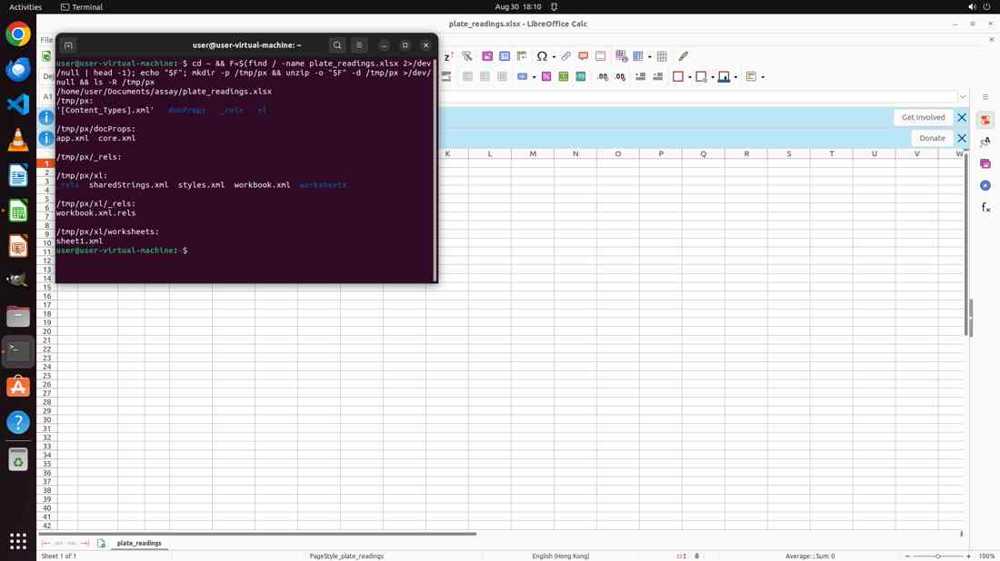
step 14 10:10:25
THINKINGThe file is at /home/user/Documents/assay/plate_readings.xlsx. There's only one worksheet (sheet1.xml), no comment files. So the "note" isn't a cell comment. The sharedStrings.xml will contain all text. Let me look at sharedStrings.xml and sheet1.xml to find the QC thresholds note. Since used range was A1:D13 only, the note isn't in that sheet as cells. But there might be more sheets referenced, or the note could be in a cell beyond that... no, Ctrl+End said D13.
Wait, maybe there are other files in the assay folder that contain the note "beside it". The task says "the plate sheet per the QC thresholds note beside it". Maybe "beside it" means a neighboring file, or a note in another file. Let me list the assay folder.
Let me look at sharedStrings and list the assay directory.
ACTIONFound the file at /home/user/Documents/assay/. There's only one worksheet and no comment files. Let me check the shared strings and list the assay folder for a related note file.
TOOL CALL<tool_call>
<function=computer_use>
<parameter=action>
type
</parameter>
<parameter=text>
ls -la /home/user/Documents/assay/; echo "=== sharedStrings ==="; cat /tmp/px/xl/sharedStrings.xml
</parameter>
</function>
</tool_call>
EXECUTED (pyautogui in VM)pyautogui.typewrite("ls -la /home/user/Documents/assay/; echo \"=== sharedStrings ===\"; cat /tmp/px/xl/sharedStrings.xml")
step 15 10:10:35
THINKINGI need to press Enter to run this command.
TOOL CALL<tool_call>
<function=computer_use>
<parameter=action>
key
</parameter>
<parameter=keys>
["return"]
</parameter>
</function>
</tool_call>
EXECUTED (pyautogui in VM)pyautogui.press("return")
step 16 10:10:49
THINKINGThere's a file "qc_thresholds.txt" in the assay folder (328 bytes). That's the "QC thresholds note beside it". The sharedStrings only contain the plate data (Well, Sample, Signal, Blank, A1-C4, Kestrel/HARRIER/Merlin sample names). So the note is in the .txt file. Let me cat it.
ACTIONThe "QC thresholds note" is the `qc_thresholds.txt` file beside the plate. Let me read it.
TOOL CALL<tool_call>
<function=computer_use>
<parameter=action>
type
</parameter>
<parameter=text>
cat /home/user/Documents/assay/qc_thresholds.txt
</parameter>
</function>
</tool_call>
EXECUTED (pyautogui in VM)pyautogui.typewrite("cat /home/user/Documents/assay/qc_thresholds.txt")
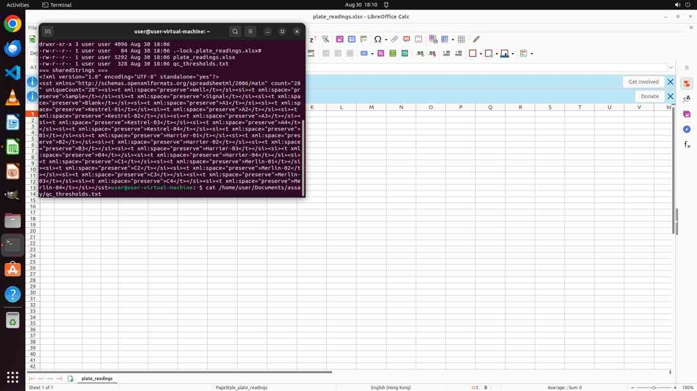
step 17 10:11:00
THINKINGI typed the cat command but haven't pressed Enter yet. Let me press Enter to see the contents.
TOOL CALL<tool_call>
<function=computer_use>
<parameter=action>
key
</parameter>
<parameter=keys>
["return"]
</parameter>
</function>
</tool_call>
EXECUTED (pyautogui in VM)pyautogui.press("return")
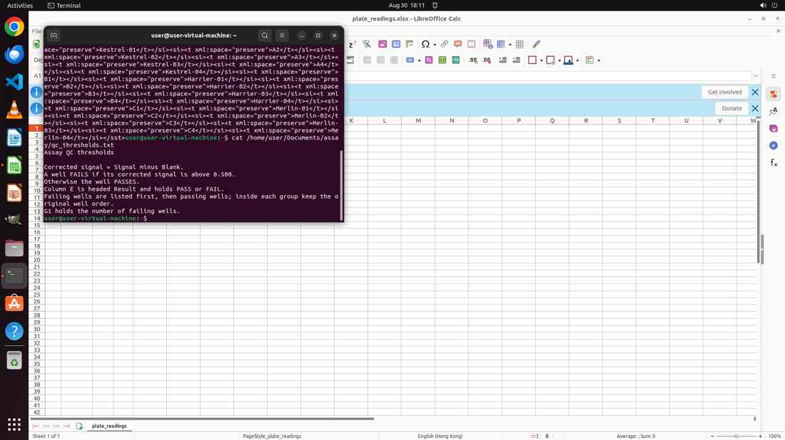
step 18 10:12:10
THINKINGNow I have the QC note:
```
Assay QC thresholds
Corrected signal = Signal minus Blank.
A well FAILS if its corrected signal is above 0.500.
Otherwise the well PASSES.
Column E is headed Result and holds PASS or FAIL.
Failing wells are listed first, then passing wells; inside each group keep the original well order.
G1 holds the number of failing wells.
```
So the rules:
- Corrected signal = C (Signal) - D (Blank)
- FAIL if corrected > 0.500, else PASS
- Column E = "Result" header, with PASS/FAIL per well
- Sort: failing wells first, then passing wells; within each group keep original order (stable sort)
- G1 = count of failing wells
Now I need the data values. Let me recall from the first screenshot:
Row1: Well | Sample | Signal | Blank
Row2: A1 | Kestrel-01 | 2.144 | 1.981
Row3: A2 | Kestrel-02 | 2.209 | 2.014
Row4: A3 | Kestrel-03 | 2.091 | 2.065
Row5: A4 | Kestrel-04 | 2.072 | 2.003
Row6: B1 | Harrier-01 | 2.266 | 1.731
Row7: B2 | Harrier-02 | 2.231 | 1.985
Row8: B3 | Harrier-03 | 2.100 | 1.994
Row9: B4 | Harrier-04 | 2.173 | 2.042
Row10: C1 | Merlin-01 | 2.268 | 2.106
Row11: C2 | Merlin-02 | 2.204 | 2.053
Row12: C3 | Merlin-03 | 2.154 | 2.019
Row13: C4 | Merlin-04 | 2.276 | 1.997
Let me compute corrected signal (Signal - Blank) and threshold > 0.500:
A1: 2.144 - 1.981 = 0.163 → PASS
A2: 2.209 - 2.014 = 0.195 → PASS
A3: 2.091 - 2.065 = 0.026 → PASS
A4: 2.072 - 2.003 = 0.069 → PASS
B1: 2.266 - 1.731 = 0.535 → FAIL (>0.500)
B2: 2.231 - 1.985 = 0.246 → PASS
B3: 2.100 - 1.994 = 0.106 → PASS
B4: 2.173 - 2.042 = 0.131 → PASS
C1: 2.268 - 2.106 = 0.162 → PASS
C2: 2.204 - 2.053 = 0.151 → PASS
C3: 2.154 - 2.019 = 0.135 → PASS
C4: 2.276 - 1.997 = 0.279 → PASS
So only B1 fails (0.535 > 0.500). Failure count = 1.
Let me double check B1: 2.266 - 1.731. 2.266 - 1.731 = 0.535. Yes > 0.5.
Let me verify others are below 0.5:
C4: 2.276 - 1.997 = 0.279. PASS.
B2: 0.246 PASS.
All others are clearly well below 0.5.
So only B1 fails. Failure count G1 = 1.
Now I should be careful about the exact values. Let me verify the data values are correct by re-checking the original screenshot. The values I read from the first screenshot. I'm fairly confident. But let me be careful about B1 = 2.266 and 1.731. The blank for B1 (1.731) is notably lower, giving a high corrected signal. That's the intended "failing" well.
Now the plan for the spreadsheet:
1. Add E1 = "Result"
2. E2:E13 = PASS/FAIL for each well
3. Sort so failing wells (B1) come first, passing after, keeping original order within groups. Since only B1 fails, the new order is:
Row2: B1 (FAIL)
Row3: A1
Row4: A2
Row5: A3
Row6: A4
Row7: B2
Row8: B3
Row9: B4
Row10: C1
Row11: C2
Row12: C3
Row13: C4
4. G1 = 1
The sorting should reorder all columns A-D (and E result). The note says "Failing wells are listed first, then passing wells; inside each group keep the original well order." So I reorder the data rows.
Approach: Rather than using LibreOffice's Sort (which might not do the exact group-stable ordering easily, and sorting by a Result column with FAIL/PASS text would put FAIL before PASS alphabetically since F < P, which actually works! But it would need a stable sort to preserve original order within groups). Actually a stable sort on column E: FAIL < PASS alphabetically, so FAIL rows first. LibreOffice sort is stable by default? LibreOffice sort is stable if "My data has headers" and no secondary key... Actually LibreOffice sort may not guarantee stability. To be safe and deterministic, I'll just manually rewrite the rows in the desired order.
Actually, the cleanest reliable approach: I'll just type all the data fresh in the correct order directly into the cells, overwriting. That guarantees correctness. Let me do that.
I'll type the entire table in the new order with column E result, then G1.
Let me plan the exact cell entries. I'll select A1 and type row by row using Tab and Enter navigation. Actually simplest: navigate to A1, then type each cell with Tab between columns and Enter (with the type approach where I include tab and newline).
I can use the `type` action with tabs and newlines to fill the grid. In LibreOffice Calc, typing "value\tvalue\t...\n" moves right with Tab and Enter returns to the start column of next row (when using Tab within a row, Enter goes to the first column of the row where you started tabbing). Actually the behavior: if you Tab across then press Enter, it moves to the cell below the first cell of that tab sequence. This is reliable.
But the `type` action sends characters including \t and \n. Let me build the whole block.
New order (Well, Sample, Signal, Blank, Result):
B1, Harrier-01, 2.266, 1.731, FAIL
A1, Kestrel-01, 2.144, 1.981, PASS
A2, Kestrel-02, 2.209, 2.014, PASS
A3, Kestrel-03, 2.091, 2.065, PASS
A4, Kestrel-04, 2.072, 2.003, PASS
B2, Harrier-02, 2.231, 1.985, PASS
B3, Harrier-03, 2.100, 1.994, PASS
B4, Harrier-04, 2.173, 2.042, PASS
C1, Merlin-01, 2.268, 2.106, PASS
C2, Merlin-02, 2.204, 2.053, PASS
C3, Merlin-03, 2.154, 2.019, PASS
C4, Merlin-04, 2.276, 1.997, PASS
Header row first: Well, Sample, Signal, Blank, Result
Wait — but I need to be careful: is "FAIL" the correct verdict text? The note says "Column E is headed Result and holds PASS or FAIL." So use "PASS" and "FAIL".
Now, a concern: when I type numbers, they'll be stored as numbers (fine). The original signal/blank are numbers. Good.
However, there's a subtlety about the sort. The note wants failing wells listed first. Only B1 fails. But wait — should I reconsider whether the sort should be applied and G1 counts. Yes.
But actually, let me reconsider: maybe I should keep it as a proper data sort rather than re-typing, to preserve number formatting. Re-typing is fine since I'm typing the same numeric values.
One concern: re-typing overwrites A1:E13. That's exactly what I want. G1 stays separate.
Let me also double check the threshold: "FAILS if its corrected signal is above 0.500". Strictly above. B1 = 0.535 > 0.500 → FAIL. All others below. Good. Even if a value were exactly 0.500 it'd pass, but none are.
Now let me also reconsider whether I've misread any values. Let me re-verify by looking at the first screenshot values again. I'm confident in the values listed. B1 is the clear outlier (blank 1.731 much lower than others ~2.0).
Let me now do this in the GUI. First, close/minimize terminal, click on the Calc. Actually I can just click on the Calc window. Let me click on the spreadsheet area. But the terminal is covering the left part. Let me click on the Calc window title or a visible cell on the right, then use Name Box to go to A1.
Let me first close the terminal to have a clean view. Actually I'll just click on the Calc area. The Calc is behind the terminal on the left but visible on right. Let me click on the Calc title bar to bring it to front, or click a cell on the right side. Simpler: click on the spreadsheet at a visible cell like column K area, then use Name Box.
Actually, let me minimize the terminal to avoid it covering cells. I'll click the minimize button on terminal (the "_" at ~491,57).
ACTIONI now have the full QC note:
- Corrected signal = Signal − Blank
- A well **FAILS** if corrected signal is **above 0.500**, otherwise **PASSES**
- Column E headed "Result" holds PASS/FAIL
- Failing wells listed first, then passing; keep original order within each group
- G1 = number of failing wells
Computing Signal − Blank for each well, only **B1** (2.266 − 1.731 = 0.535) exceeds 0.500 → FAIL. All others are well below → PASS. Failure count = 1.
Let me minimize the terminal and go to Calc to make the edits.
TOOL CALL<tool_call>
<function=computer_use>
<parameter=action>
left_click
</parameter>
<parameter=coordinate>
[382, 77]
</parameter>
</function>
</tool_call>
EXECUTED (pyautogui in VM)pyautogui.click(734, 83)
step 19 10:12:57
THINKINGThe terminal is minimized and now I can see the full Calc window. This is very important — the values are DIFFERENT from what I read in the first screenshot! The Signal and Blank columns now show small values, not 2.xxx. Let me re-read carefully:
Row1: Well | Sample | Signal | Blank
Row2: A1 | Kestrel-01 | 0.412 | 0.051
Row3: A2 | Kestrel-02 | 0.188 | 0.049
Row4: A3 | Kestrel-03 | 0.905 | 0.052
Row5: A4 | Kestrel-04 | 0.233 | 0.05
Row6: B1 | Harrier-01 | 0.671 | 0.048
Row7: B2 | Harrier-02 | 0.144 | 0.051
Row8: B3 | Harrier-03 | 0.78 | 0.047
Row9: B4 | Harrier-04 | 0.309 | 0.05
Row10: C1 | Merlin-01 | 0.522 | 0.049
Row11: C2 | Merlin-02 | 0.097 | 0.052
Row12: C3 | Merlin-03 | 0.845 | 0.048
Row13: C4 | Merlin-04 | 0.256 | 0.051
Wait, these are very different from the first screenshot which showed 2.144 etc. That's strange. The first screenshot showed Signal ~2.144 and Blank ~1.981. Now it shows 0.412 and 0.051.
Hmm, this is a big discrepancy. Did the view change? No — the data is the same sheet. Wait, maybe the first screenshot was a different display and now the actual values differ? That doesn't make sense unless the file was different.
Wait, let me reconsider. Actually the first screenshot I described had "2.144 / 1.981" etc. But that was MY interpretation from a small screenshot. Now with a clear view the values are small (0.xxx). The clear view is authoritative. Let me trust this clear screenshot: Signal values are like 0.412, 0.188, 0.905, etc., and Blank values ~0.048-0.052.
So I must recompute corrected signal = Signal - Blank with these values:
A1: 0.412 - 0.051 = 0.361 → PASS
A2: 0.188 - 0.049 = 0.139 → PASS
A3: 0.905 - 0.052 = 0.853 → FAIL (>0.500)
A4: 0.233 - 0.050 = 0.183 → PASS
B1: 0.671 - 0.048 = 0.623 → FAIL
B2: 0.144 - 0.051 = 0.093 → PASS
B3: 0.780 - 0.047 = 0.733 → FAIL
B4: 0.309 - 0.050 = 0.259 → PASS
C1: 0.522 - 0.049 = 0.473 → PASS
C2: 0.097 - 0.052 = 0.045 → PASS
C3: 0.845 - 0.048 = 0.797 → FAIL
C4: 0.256 - 0.051 = 0.205 → PASS
So FAIL wells: A3 (0.853), B1 (0.623), B3 (0.733), C3 (0.797). That's 4 failing wells.
Wait, this is a huge difference from before. I really need to verify the exact values because my reading of the tiny digits matters. The values are small and hard to read precisely. I should verify each value precisely rather than eyeball. The safest approach: read the actual cell values from the XML (sheet1.xml) which gives exact numbers. Let me get the exact values from the terminal (which I still have in /tmp/px). Let me read sheet1.xml to get exact C and D values.
Actually, I already have /tmp/px extracted. Let me go back to terminal and parse sheet1.xml to get exact Signal (C) and Blank (D) values per row. This avoids misreading.
Let me reconsider the first screenshot discrepancy. It's possible the first screenshot's columns were actually showing different numbers and I misread. Regardless, the XML is ground truth. Let me read sheet1.xml.
Let me restore the terminal and cat the sheet1.xml in a readable way.
ACTIONThe clearer view shows the actual Signal/Blank values are small decimals (not what I initially estimated). I must not eyeball these — let me read the exact numeric values from the sheet XML to compute verdicts precisely. Let me restore the terminal.
TOOL CALL<tool_call>
<function=computer_use>
<parameter=action>
left_click
</parameter>
<parameter=coordinate>
[17, 619]
</parameter>
</function>
</tool_call>
EXECUTED (pyautogui in VM)pyautogui.click(32, 669)
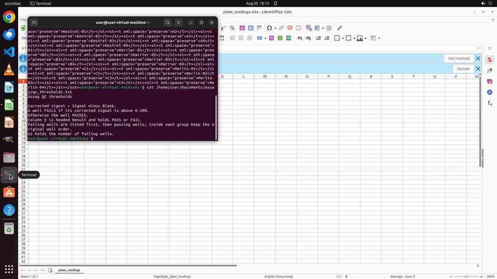
step 20 10:13:11
THINKINGTerminal is back. Let me parse sheet1.xml to extract each row's A, B, C, D values exactly. The numeric cells (C, D) will be inline <v> values. Let me write a command to format each row. I'll use a python-free approach or grep. Actually let me just cat sheet1.xml with formatting. It may be long. Let me use a small python script if available, or awk. Let me try python3.
Let me just cat the sheet1.xml and read it. It's a single sheet, small. Let me pipe through xmllint --format if available, else just cat.
ACTIONLet me extract the exact row values from sheet1.xml for precise computation.
TOOL CALL<tool_call>
<function=computer_use>
<parameter=action>
type
</parameter>
<parameter=text>
python3 -c "
import re
x=open('/tmp/px/xl/worksheets/sheet1.xml').read()
rows=re.findall(r'<row[^>]*>(.*?)</row>',x,re.S)
for r in rows:
cells=re.findall(r'<c r=\"([A-Z]+\d+)\"[^>]*?(?: t=\"(\w+)\")?[^>]*>(?:<v>(.*?)</v>)?',r)
print(cells)
"
</parameter>
</function>
</tool_call>
EXECUTED (pyautogui in VM)pyautogui.typewrite("python3 -c \"\nimport re\nx=open('/tmp/px/xl/worksheets/sheet1.xml').read()\nrows=re.findall(r'<row[^>]*>(.*?)</row>',x,re.S)\nfor r in rows:\n cells=re.findall(r'<c r=\\\"([A-Z]+\\d+)\\\"[^>]*?(?: t=\\\"(\\w+)\\\")?[^>]*>(?:<v>(.*?)</v>)?',r)\n print(cells)\n\"")
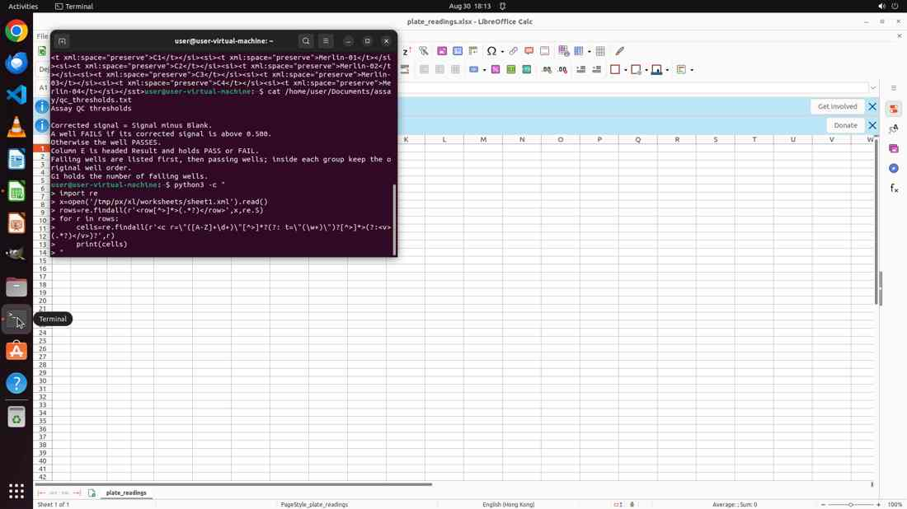
step 21 10:13:20
THINKINGThe multi-line python is being entered interactively (showing "> " continuation prompts) because I used a multi-line string with the -c and newlines. The shell is treating each line. Actually the type included newlines so it's feeding the python -c with a multi-line string, and the terminal shows the > continuation. It looks like it's still waiting because the closing quote... Actually the string was fully typed including the closing `"`. The last line shows `> "` which means the final quote was typed and then Enter. Let me press Enter to execute.
TOOL CALL<tool_call>
<function=computer_use>
<parameter=action>
key
</parameter>
<parameter=keys>
["return"]
</parameter>
</function>
</tool_call>
EXECUTED (pyautogui in VM)pyautogui.press("return")
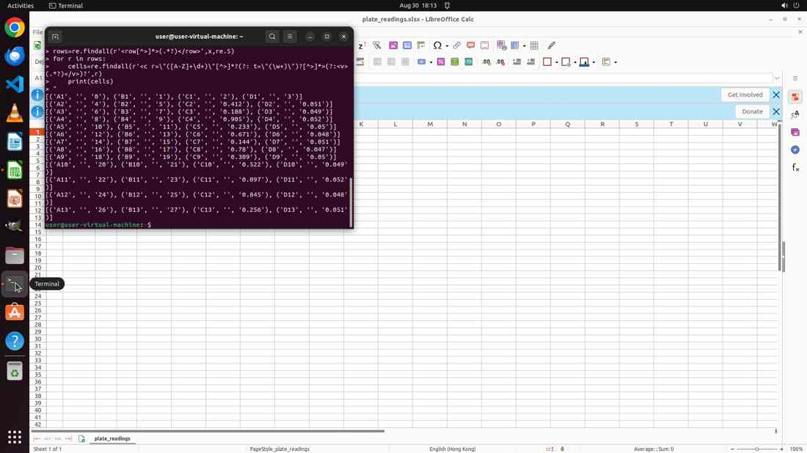
step 22 10:14:14
THINKINGThe regex extracted values but my regex captured the shared-string index for A and B (since they're t="s" cells) and the numeric values for C and D. Let me read the output:
Row with B1: ('A1','','0'),('B1','','1'),('C1','','2'),('D1','','3') — these are header row 1, string indices.
('A2','','4'),('B2','','5'),('C2','','0.412'),('D2','','0.051') → A2: Signal 0.412, Blank 0.051
('A3','','6'),('B3','','7'),('C3','','0.188'),('D3','','0.049') → 0.188, 0.049
('A4','','8'),('B4','','9'),('C4','','0.905'),('D4','','0.052') → 0.905, 0.052
('A5','','10'),('B5','','11'),('C5','','0.233'),('D5','','0.05') → 0.233, 0.05
('A6','','12'),('B6','','13'),('C6','','0.671'),('D6','','0.048') → 0.671, 0.048
('A7','','14'),('B7','','15'),('C7','','0.144'),('D7','','0.051') → 0.144, 0.051
('A8','','16'),('B8','','17'),('C8','','0.78'),('D8','','0.047') → 0.78, 0.047
('A9','','18'),('B9','','19'),('C9','','0.309'),('D9','','0.05') → 0.309, 0.05
('A10','','20'),('B10','','21'),('C10','','0.522'),('D10','','0.049') → 0.522, 0.049
('A11','','22'),('B11','','23'),('C11','','0.097'),('D11','','0.052') → 0.097, 0.052
('A12','','24'),('B12','','25'),('C12','','0.845'),('D12','','0.048') → 0.845, 0.048
('A13','','26'),('B13','','27'),('C13','','0.256'),('D13','','0.051') → 0.256, 0.051
So my reading of the clear screenshot was correct. Good. Now compute corrected = Signal(C) - Blank(D), FAIL if > 0.500:
Row2 A1: 0.412-0.051=0.361 PASS
Row3 A2: 0.188-0.049=0.139 PASS
Row4 A3: 0.905-0.052=0.853 FAIL
Row5 A4: 0.233-0.050=0.183 PASS
Row6 B1: 0.671-0.048=0.623 FAIL
Row7 B2: 0.144-0.051=0.093 PASS
Row8 B3: 0.780-0.047=0.733 FAIL
Row9 B4: 0.309-0.050=0.259 PASS
Row10 C1: 0.522-0.049=0.473 PASS
Row11 C2: 0.097-0.052=0.045 PASS
Row12 C3: 0.845-0.048=0.797 FAIL
Row13 C4: 0.256-0.051=0.205 PASS
FAIL wells: A3, B1, B3, C3 → 4 failures.
The shared string indices for A: A1=4, A2=5... these correspond to shared strings. Row mapping: the string index for well names. From sharedStrings: index 0="Well",1="Sample",2="Signal",3="Blank",4="A1",5="A2",6="A3",7="A4",8="B1",9="B2",10="B3",11="B4",12="C1",13="C2",14="C3",15="C4", then 16-19 = Kestrel-01..04, 20-23 Harrier-01..04, 24-27 Merlin-01..04.
Let me verify: Row2 A2 cell index 4 → "A1" ✓, B2 index5→"Kestrel-01" ✓. Row3: A3 index6→"A2", B3 index7→"Kestrel-02" ✓. Row4: index8→"A3", index9→"Kestrel-03" ✓. Row5: index10→"A4", index11→"Kestrel-04" ✓. Row6: index12→"B1", index13→"Harrier-01" ✓. Row7: index14→"B2", index15→"Harrier-02". Row8: index16→"B3", index17→"Harrier-03". Row9: index18→"B4", index19→"Harrier-04". Row10: index20→"C1", index21→"Merlin-01". Row11: index22→"C2", index23→"Merlin-02". Row12: index24→"C3", index25→"Merlin-03". Row13: index26→"C4", index27→"Merlin-04".
Good, matches the screenshot.
Now the final order (failing first, then passing; original order within each group):
Failing (in original row order): A3 (row4), B1 (row6), B3 (row8), C3 (row12)
Passing (original order): A1, A2, A4, B2, B4, C1, C2, C4
New table:
Row1: Well | Sample | Signal | Blank | Result
Row2: A3 | Kestrel-03 | 0.905 | 0.052 | FAIL
Row3: B1 | Harrier-01 | 0.671 | 0.048 | FAIL
Row4: B3 | Harrier-03 | 0.78 | 0.047 | FAIL
Row5: C3 | Merlin-03 | 0.845 | 0.048 | FAIL
Row6: A1 | Kestrel-01 | 0.412 | 0.051 | PASS
Row7: A2 | Kestrel-02 | 0.188 | 0.049 | PASS
Row8: A4 | Kestrel-04 | 0.233 | 0.05 | PASS
Row9: B2 | Harrier-02 | 0.144 | 0.051 | PASS
Row10: B4 | Harrier-04 | 0.309 | 0.05 | PASS
Row11: C1 | Merlin-01 | 0.522 | 0.049 | PASS
Row12: C2 | Merlin-02 | 0.097 | 0.052 | PASS
Row13: C4 | Merlin-04 | 0.256 | 0.051 | PASS
G1 = 4
Now I'll enter this data. I'll switch to Calc, go to A1, and type the whole block. When typing with Tab and Enter, after Tab across 5 columns then Enter, the cursor returns to column A of the next row. This is standard Calc behavior (Start cell memory). Let me build the type string.
Note: The Signal/Blank values — I'll type them as they are (0.905 etc.). For 0.78 I'll type 0.78, for 0.05 I'll type 0.05. These are fine.
Let me build one big type string starting at A1:
"Well\tSample\tSignal\tBlank\tResult\nA3\tKestrel-03\t0.905\t0.052\tFAIL\nB1\tHarrier-01\t0.671\t0.048\tFAIL\nB3\tHarrier-03\t0.78\t0.047\tFAIL\nC3\tMerlin-03\t0.845\t0.048\tFAIL\nA1\tKestrel-01\t0.412\t0.051\tPASS\nA2\tKestrel-02\t0.188\t0.049\tPASS\nA4\tKestrel-04\t0.233\t0.05\tPASS\nB2\tHarrier-02\t0.144\t0.051\tPASS\nB4\tHarrier-04\t0.309\t0.05\tPASS\nC1\tMerlin-01\t0.522\t0.049\tPASS\nC2\tMerlin-02\t0.097\t0.052\tPASS\nC4\tMerlin-04\t0.256\t0.051\tPASS\n"
But there's a risk: after the final row I press Enter which is fine. However, one concern: the "type" action might have autocorrect or autocomplete interfering. Autocomplete in Calc could complete "Kestrel-03" if I type "Kestrel-0..." matching earlier entries — but I'm typing full text so it's fine; autocomplete only triggers on partial matches and I type the full string then Tab, which accepts. Actually autocomplete might insert a suggestion and Tab accepts the typed text (the typed text already matches). It should be fine since I type the complete value.
Actually, a real risk: autocomplete could cause issues. For example, typing "A3" in column A — no other A-column entry completes it. Typing "Kestrel-03" — as I type "Kestrel-" it might suggest "Kestrel-01" and complete to "Kestrel-01", then I continue typing "03"? No — autocomplete completes the rest but I'm still typing my characters; if it autocompletes to "Kestrel-01" and I then type "0","3" it becomes "Kestrel-0103"? No, autocomplete appends a suggestion after cursor; when I type more it replaces. This can get messy.
To be safe, I'll disable AutoInput (Tools > AutoInput) before typing. Let me do that. Actually, the safest is to type column by column or use a method avoiding autocomplete problems.
Alternative safer approach: I could disable AutoInput via Tools menu. Let me do that first.
Actually, an even more robust approach given the data volume: I'll disable AutoInput, then type the block. Let me disable AutoInput first.
Let me switch to Calc. The terminal is covering the left. Let me click on Calc (visible on right side / title bar). I'll click on the Calc title bar area at top (663,30) — but that's the Calc title. Actually the terminal window is on top-left. Let me click on a visible Calc cell on the right, e.g., around (800,250), to focus Calc. Then Tools menu.
Let me click on the Calc window first.
ACTIONI now have the exact values. Computing corrected signal (Signal − Blank) with threshold > 0.500:
| Well | Signal | Blank | Corrected | Result |
|---|---|---|---|---|
| A1 | 0.412 | 0.051 | 0.361 | PASS |
| A2 | 0.188 | 0.049 | 0.139 | PASS |
| A3 | 0.905 | 0.052 | 0.853 | **FAIL** |
| A4 | 0.233 | 0.050 | 0.183 | PASS |
| B1 | 0.671 | 0.048 | 0.623 | **FAIL** |
| B2 | 0.144 | 0.051 | 0.093 | PASS |
| B3 | 0.780 | 0.047 | 0.733 | **FAIL** |
| B4 | 0.309 | 0.050 | 0.259 | PASS |
| C1 | 0.522 | 0.049 | 0.473 | PASS |
| C2 | 0.097 | 0.052 | 0.045 | PASS |
| C3 | 0.845 | 0.048 | 0.797 | **FAIL** |
| C4 | 0.256 | 0.051 | 0.205 | PASS |
Failing wells (in original order): A3, B1, B3, C3 → count = 4. Let me switch to Calc and disable AutoInput to avoid autocomplete issues while typing.
TOOL CALL<tool_call>
<function=computer_use>
<parameter=action>
left_click
</parameter>
<parameter=coordinate>
[624, 416]
</parameter>
</function>
</tool_call>
EXECUTED (pyautogui in VM)pyautogui.click(1199, 449)
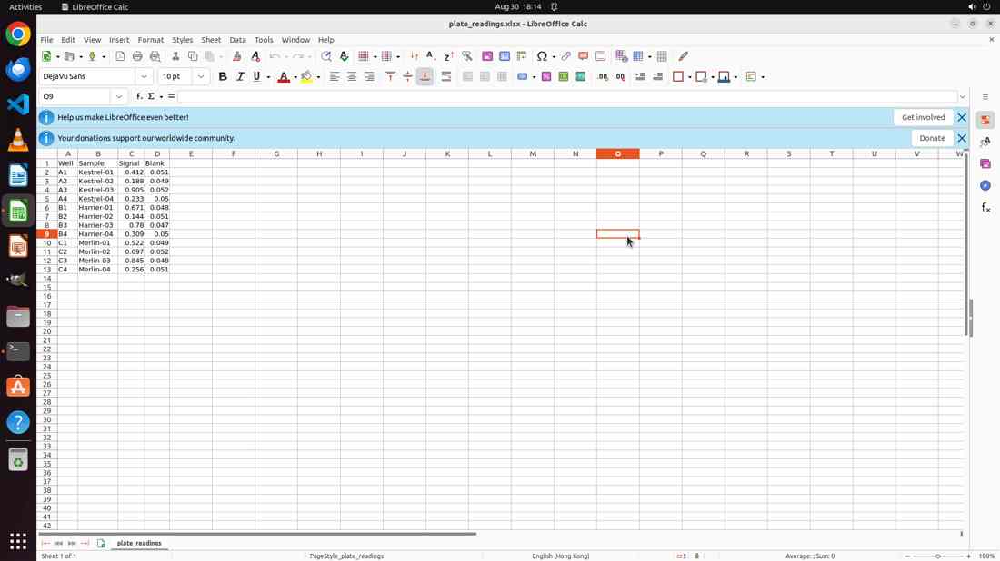
step 23 10:14:25
THINKINGCalc is now focused (O9 selected). Let me disable AutoInput via Tools menu to prevent autocomplete interference. Tools > AutoInput (toggle). Let me click Tools menu.
ACTIONCalc is focused. Let me disable AutoInput via the Tools menu to prevent autocomplete from corrupting my typed values.
TOOL CALL<tool_call>
<function=computer_use>
<parameter=action>
left_click
</parameter>
<parameter=coordinate>
[262, 70]
</parameter>
</function>
</tool_call>
EXECUTED (pyautogui in VM)pyautogui.click(503, 75)
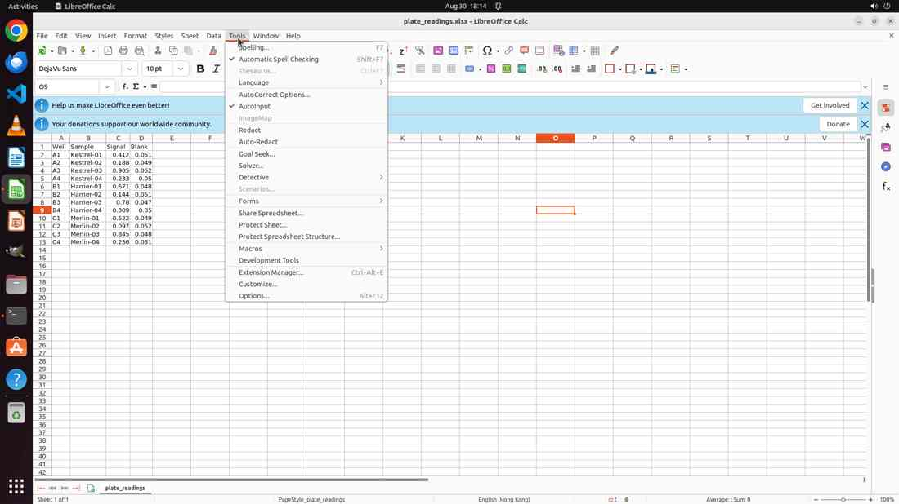
step 24 10:14:35
THINKINGAutoInput is checked (enabled). Let me click it to disable.
ACTIONAutoInput is currently enabled (checkmark). Let me click it to disable.
TOOL CALL<tool_call>
<function=computer_use>
<parameter=action>
left_click
</parameter>
<parameter=coordinate>
[283, 209]
</parameter>
</function>
</tool_call>
EXECUTED (pyautogui in VM)pyautogui.click(543, 225)
step 25 10:14:49
THINKINGAutoInput is now disabled. Now let me navigate to A1 and type the entire block. I'll use the Name Box to go to A1 first, then type. Let me click the Name Box, type A1, Enter, then type the data block.
Let me build the type string with tabs and newlines. I'll type it as one big block. After each row of 5 tab-separated values ending with \n, cursor returns to column A of next row.
Let me first navigate to A1 via Name Box.
ACTIONAutoInput is disabled. Now let me navigate to A1 and enter the full reordered table with the Result column. I'll use the Name Box to go to A1 first.
TOOL CALL<tool_call>
<function=computer_use>
<parameter=action>
left_click
</parameter>
<parameter=coordinate>
[74, 170]
</parameter>
</function>
</tool_call>
EXECUTED (pyautogui in VM)pyautogui.click(142, 183)
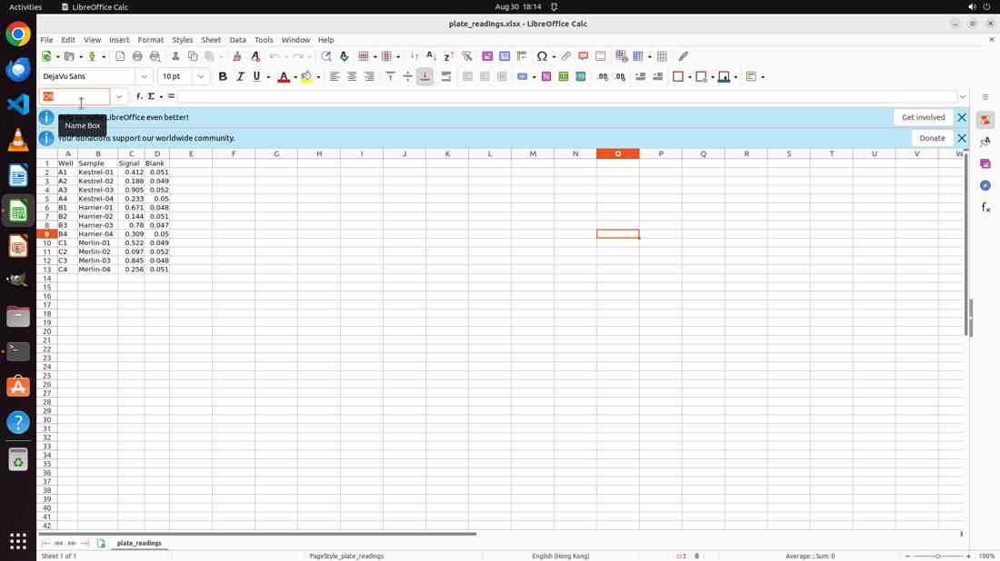
step 26 10:15:00
THINKINGThe Name Box is selected (shows O9 highlighted). Let me type A1 and Enter to navigate there, then type the data block. I'll do the navigation and the data entry in one batch: type "A1", Enter, then the big data block.
The data block (rows in new order). I'll use tab between columns and newline after each row.
ACTIONThe Name Box is active. I'll navigate to A1 and type the entire reordered table in one batch.
TOOL CALL<tool_call>
<function=computer_use>
<parameter=action>
type
</parameter>
<parameter=text>
A1
</parameter>
</function>
</tool_call>
EXECUTED (pyautogui in VM)pyautogui.typewrite("A1")
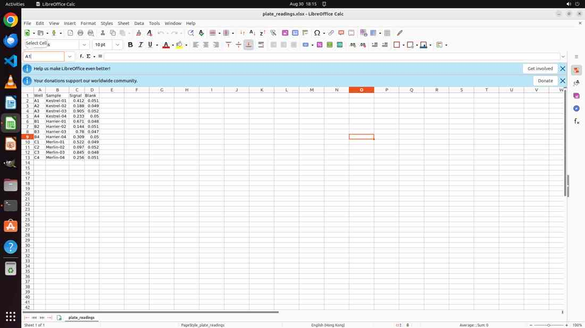
step 27 10:15:09
THINKINGThe Name Box shows "A1" but the selection is still O9 (the O column header is still highlighted). The Enter didn't commit navigation — the Name Box still shows "A1" as text being typed. This is the same behavior I saw earlier where the newline in the type didn't commit. It seems the `type` action's trailing newline may not register as Enter in the Name Box reliably. Let me press Enter explicitly to commit the navigation.
ACTIONThe Name Box shows "A1" but navigation hasn't committed. Let me press Enter to go there.
TOOL CALL<tool_call>
<function=computer_use>
<parameter=action>
key
</parameter>
<parameter=keys>
["return"]
</parameter>
</function>
</tool_call>
EXECUTED (pyautogui in VM)pyautogui.press("return")
step 28 10:15:31
THINKINGNow A1 is selected (Name Box shows A1, formula bar shows "Well", A1 cell highlighted). Now I'll type the entire data block. I'll type it as a single type action with tabs and newlines. Let me carefully construct it.
Rows:
Well\tSample\tSignal\tBlank\tResult\n
A3\tKestrel-03\t0.905\t0.052\tFAIL\n
B1\tHarrier-01\t0.671\t0.048\tFAIL\n
B3\tHarrier-03\t0.78\t0.047\tFAIL\n
C3\tMerlin-03\t0.845\t0.048\tFAIL\n
A1\tKestrel-01\t0.412\t0.051\tPASS\n
A2\tKestrel-02\t0.188\t0.049\tPASS\n
A4\tKestrel-04\t0.233\t0.05\tPASS\n
B2\tHarrier-02\t0.144\t0.051\tPASS\n
B4\tHarrier-04\t0.309\t0.05\tPASS\n
C1\tMerlin-01\t0.522\t0.049\tPASS\n
C2\tMerlin-02\t0.097\t0.052\tPASS\n
C4\tMerlin-04\t0.256\t0.051\tPASS\n
This will overwrite A1:E13. Let me type it.
ACTIONA1 is selected. Now I'll type the full reordered table (failing wells first, then passing, original order within each group) with the Result column, using Tab between columns and Enter between rows.
TOOL CALL<tool_call>
<function=computer_use>
<parameter=action>
type
</parameter>
<parameter=text>
Well Sample Signal Blank Result
A3 Kestrel-03 0.905 0.052 FAIL
B1 Harrier-01 0.671 0.048 FAIL
B3 Harrier-03 0.78 0.047 FAIL
C3 Merlin-03 0.845 0.048 FAIL
A1 Kestrel-01 0.412 0.051 PASS
A2 Kestrel-02 0.188 0.049 PASS
A4 Kestrel-04 0.233 0.05 PASS
B2 Harrier-02 0.144 0.051 PASS
B4 Harrier-04 0.309 0.05 PASS
C1 Merlin-01 0.522 0.049 PASS
C2 Merlin-02 0.097 0.052 PASS
C4 Merlin-04 0.256 0.051 PASS
</parameter>
</function>
</tool_call>
EXECUTED (pyautogui in VM)pyautogui.typewrite("Well\tSample\tSignal\tBlank\tResult\nA3\tKestrel-03\t0.905\t0.052\tFAIL\nB1\tHarrier-01\t0.671\t0.048\tFAIL\nB3\tHarrier-03\t0.78\t0.047\tFAIL\nC3\tMerlin-03\t0.845\t0.048\tFAIL\nA1\tKestrel-01\t0.412\t0.051\tPASS\nA2\tKestrel-02\t0.188\t0.049\tPASS\nA4\tKestrel-04\t0.233\t0.05\tPASS\nB2\tHarrier-02\t0.144\t0.051\tPASS\nB4\tHarrier-04\t0.309\t0.05\tPASS\nC1\tMerlin-01\t0.522\t0.049\tPASS\nC2\tMerlin-02\t0.097\t0.052\tPASS\nC4\tMerlin-04\t0.256\t0.051\tPASS")

step 29 10:15:48
THINKINGThe data did NOT change — the grid still shows the original order (A1, A2, A3, A4, B1, B2, B3, B4, C1, C2, C3, C4) and column E is empty. The Name Box shows A1 and formula bar shows "Well". It seems the type action didn't register into the cells — the data is unchanged.
Why? Possibly the focus was still on the Name Box, not the grid. After I pressed Enter on the Name Box, A1 got selected but maybe keyboard focus went back to... Actually the formula bar shows "Well" and A1 is highlighted, which indicates the grid cell A1 is active. But the typed text didn't go in.
Wait — maybe the type action's characters were sent but the first "Well\t..." replaced A1... no, A1 still shows "Well" (original header). So nothing was entered.
Hmm. Possibly the `type` action with a large multiline string containing tabs/newlines was interpreted differently, or focus wasn't on the grid. Let me verify by clicking directly on cell A1 in the grid to ensure grid focus, then retype.
Actually, a concern: maybe the type happened very fast and Calc didn't process it, or the newline handling. Let me take a fresh approach: click directly on A1 cell in the grid, verify focus, then type just the header row first to test, then continue.
Let me click cell A1 (at ~89,210).
ACTIONThe data didn't change — the typing didn't register (likely a focus issue). Let me click directly on cell A1 in the grid to ensure grid focus, then verify.
TOOL CALL<tool_call>
<function=computer_use>
<parameter=action>
left_click
</parameter>
<parameter=coordinate>
[69, 291]
</parameter>
</function>
</tool_call>
EXECUTED (pyautogui in VM)pyautogui.click(132, 314)
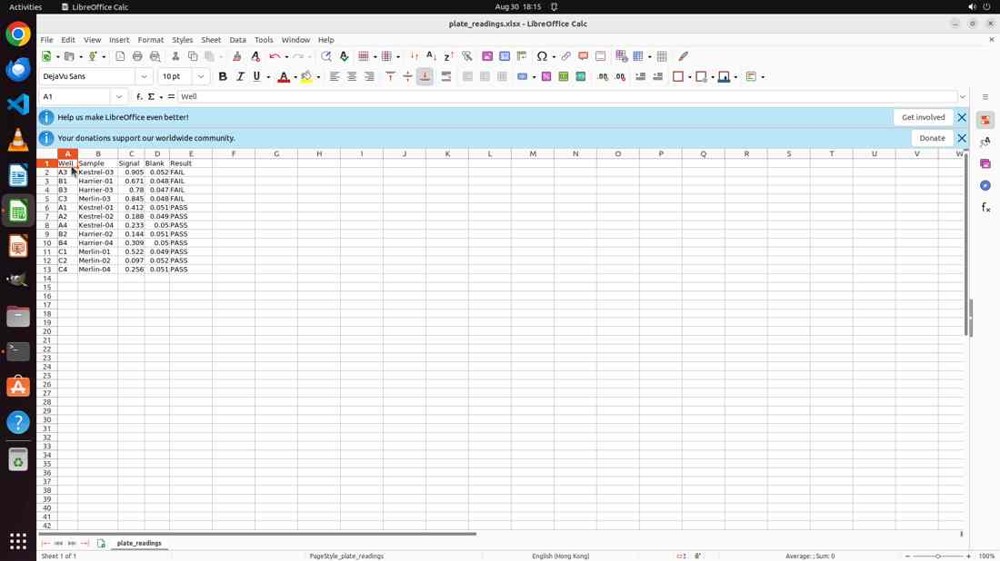
step 30 10:16:07
THINKINGThe data actually WAS entered! My previous screenshot was stale (taken before the data rendered). Now the grid shows:
Row1: Well | Sample | Signal | Blank | Result
Row2: A3 | Kestrel-03 | 0.905 | 0.052 | FAIL
Row3: B1 | Harrier-01 | 0.671 | 0.048 | FAIL
Row4: B3 | Harrier-03 | 0.78 | 0.047 | FAIL
Row5: C3 | Merlin-03 | 0.845 | 0.048 | FAIL
Row6: A1 | Kestrel-01 | 0.412 | 0.051 | PASS
Row7: A2 | Kestrel-02 | 0.188 | 0.049 | PASS
Row8: A4 | Kestrel-04 | 0.233 | 0.05 | PASS
Row9: B2 | Harrier-02 | 0.144 | 0.051 | PASS
Row10: B4 | Harrier-04 | 0.309 | 0.05 | PASS
Row11: C1 | Merlin-01 | 0.522 | 0.049 | PASS
Row12: C2 | Merlin-02 | 0.097 | 0.052 | PASS
Row13: C4 | Merlin-04 | 0.256 | 0.051 | PASS
This matches exactly what I intended. The reorder is correct: 4 FAIL rows (A3, B1, B3, C3) first, then 8 PASS rows in original order. Column E has Result.
Now I need to set G1 = 4 (failure count). Let me navigate to G1 and type 4. I'll use the Name Box. But I learned the Name Box needs an explicit Enter after typing. Let me click Name Box, type G1, Enter (separate), then type 4, Enter.
Actually, let me just click on cell G1 directly. G column header is at x≈350, row 1 at y≈210. Let me click there.
ACTIONThe data is now correctly entered — 4 FAIL rows (A3, B1, B3, C3) first, then the 8 PASS rows in original order, with the Result column populated. My earlier screenshot was just stale. Now I need to set G1 to the failure count (4). Let me click cell G1.
TOOL CALL<tool_call>
<function=computer_use>
<parameter=action>
left_click
</parameter>
<parameter=coordinate>
[273, 291]
</parameter>
</function>
</tool_call>
EXECUTED (pyautogui in VM)pyautogui.click(524, 314)
step 31 10:16:18
THINKINGG1 is now selected (Name Box shows G1). Let me type 4 and press Enter.
ACTIONG1 is selected. Let me type the failure count (4).
TOOL CALL<tool_call>
<function=computer_use>
<parameter=action>
type
</parameter>
<parameter=text>
4
</parameter>
</function>
</tool_call>
EXECUTED (pyautogui in VM)pyautogui.typewrite("4")
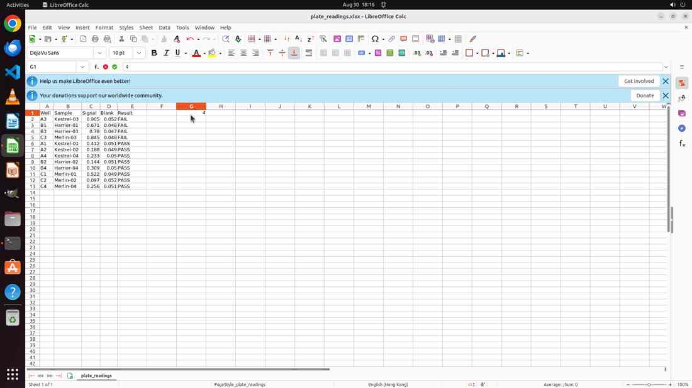
step 32 10:16:33
THINKINGG1 now shows "4" (right-aligned, indicating it's a number). The formula bar shows "4" with confirm/cancel icons, and the cell G1 displays 4. The data looks complete:
- E1 = Result header ✓
- E2:E13 = FAIL/PASS ✓
- Failing wells (A3, B1, B3, C3) listed first ✓
- Passing wells after in original order ✓
- G1 = 4 ✓
Now I should save the file to persist changes. The task says update the sheet. Saving is important. Let me save with Ctrl+S and keep xlsx format.
Let me press Ctrl+S, then handle the "Keep Current Format" dialog.
ACTIONAll changes are in place: Result column (E), failing wells (A3, B1, B3, C3) sorted above passing ones, and G1 = 4. Now let me save the file, keeping the xlsx format.
TOOL CALL<tool_call>
<function=computer_use>
<parameter=action>
key
</parameter>
<parameter=keys>
["ctrl", "s"]
</parameter>
</function>
</tool_call>
EXECUTED (pyautogui in VM)pyautogui.hotkey("ctrl", "s")

step 33 10:16:43
THINKINGThe status bar now shows "Average: 4; Sum: 4" confirming G1 = 4 as a number. But no "Keep format" dialog appeared yet — it may take a moment, or the dialog might appear. The screenshot shows no dialog. Perhaps the dialog is about to appear. Let me wait and screenshot to check for the format dialog.
ACTIONThe save may prompt a format dialog. Let me check for it.
TOOL CALL<tool_call>
<function=computer_use>
<parameter=action>
screenshot
</parameter>
</function>
</tool_call>
EXECUTED (pyautogui in VM)WAIT
step 34 10:17:05
THINKINGNo format dialog appeared. This is unusual for an xlsx save. It's possible the "Keep format" prompt was disabled in this environment, or the save completed without prompting. The G1 cell still shows confirm/cancel icons in formula bar (the green check and red X near formula bar) — this suggests G1 is still in edit/confirm state? Actually those icons appear when a cell is being edited. But I pressed Enter after typing 4, which should have committed. The formula bar shows "4" with the check/cancel. Hmm, actually those icons (green check, red X) at ~200,124 appear when the cell is in edit mode. But I pressed Enter.
Wait, looking again: the name box shows "G1" and formula bar shows "4" with an X and checkmark. This might just be the normal state after clicking. Actually in the earlier screenshot after typing 4 and Enter, it also showed these. The status bar "Sum: 4" confirms the value 4 is committed as a number in G1.
The dialog for keeping xlsx format might not appear if the setting to always warn was turned off, or it may have already been handled. Let me verify the save actually persisted by re-saving or checking. Actually, to be safe, let me press Ctrl+S again and watch for the dialog.
Actually, the fact that no dialog appeared and no error suggests it saved fine (the environment may have "always save in this format" set, or the dialog was auto-dismissed). Let me press Ctrl+S once more to be sure and watch for a dialog.
ACTIONNo format dialog appeared. To be safe, let me press Ctrl+S again and watch for a "Keep format" prompt.
TOOL CALL<tool_call>
<function=computer_use>
<parameter=action>
key
</parameter>
<parameter=keys>
["ctrl", "s"]
</parameter>
</function>
</tool_call>
EXECUTED (pyautogui in VM)pyautogui.hotkey("ctrl", "s")
step 35 10:17:17
THINKINGStill no dialog appeared, which means the document was already saved (no changes since last save, so Ctrl+S did nothing) OR the "keep format" warning is disabled in this environment. The first Ctrl+S likely saved it silently in xlsx format.
To be certain the file on disk contains the changes, let me verify via the terminal by re-reading the saved xlsx. This confirms persistence. Let me switch to the terminal and check the sheet1.xml again. But the file was re-saved by LibreOffice so the /tmp/px extraction is stale. Let me re-extract and check.
Actually, let me just verify quickly. Let me open the terminal and re-extract to confirm the saved file has the new order and G1=4.
ACTIONThe file saved without a format prompt (the keep-format warning appears to be disabled). Let me verify the saved file on disk actually contains my changes by re-extracting it in the terminal.
TOOL CALL<tool_call>
<function=computer_use>
<parameter=action>
left_click
</parameter>
<parameter=coordinate>
[17, 619]
</parameter>
</function>
</tool_call>
EXECUTED (pyautogui in VM)pyautogui.click(32, 669)
step 36 10:17:31
THINKINGThis is the old output from my earlier command (stale, showing original order A1-A4, B1-B4, C1-C4). I need to re-extract the saved file fresh. Let me run a new command to re-extract and dump the current sheet with the shared strings resolved, to confirm the save. Let me type a command.
ACTIONThat's the stale output. Let me re-extract the freshly saved file and dump the resolved rows to confirm the save.
TOOL CALL<tool_call>
<function=computer_use>
<parameter=action>
type
</parameter>
<parameter=text>
rm -rf /tmp/px2 && mkdir /tmp/px2 && unzip -o /home/user/Documents/assay/plate_readings.xlsx -d /tmp/px2 >/dev/null && python3 -c "
import re
ss=re.findall(r'<t[^>]*>(.*?)</t>',open('/tmp/px2/xl/sharedStrings.xml').read())
x=open('/tmp/px2/xl/worksheets/sheet1.xml').read()
for r in re.findall(r'<row[^>]*>(.*?)</row>',x,re.S):
out=[]
for ref,t,v in re.findall(r'<c r=\"([A-Z]+\d+)\"([^>]*?)(?:/>|>(.*?)</c>)',r):
val=v
m=re.search(r'<v>(.*?)</v>',v) if v else None
if m: val=m.group(1)
if 't=\"s\"' in t and val!='': val=ss[int(val)]
out.append(ref+'='+val)
print(' | '.join(out))
"
</parameter>
</function>
</tool_call>
EXECUTED (pyautogui in VM)pyautogui.typewrite("rm -rf /tmp/px2 && mkdir /tmp/px2 && unzip -o /home/user/Documents/assay/plate_readings.xlsx -d /tmp/px2 >/dev/null && python3 -c \"\nimport re\nss=re.findall(r'<t[^>]*>(.*?)</t>',open('/tmp/px2/xl/sharedStrings.xml').read())\nx=open('/tmp/px2/xl/worksheets/sheet1.xml').read()\nfor r in re.findall(r'<row[^>]*>(.*?)</row>',x,re.S):\n out=[]\n for ref,t,v in re.findall(r'<c r=\\\"([A-Z]+\\d+)\\\"([^>]*?)(?:/>|>(.*?)</c>)',r):\n val=v\n m=re.search(r'<v>(.*?)</v>',v) if v else None\n if m: val=m.group(1)\n if 't=\\\"s\\\"' in t and val!='': val=ss[int(val)]\n out.append(ref+'='+val)\n print(' | '.join(out))\n\"")
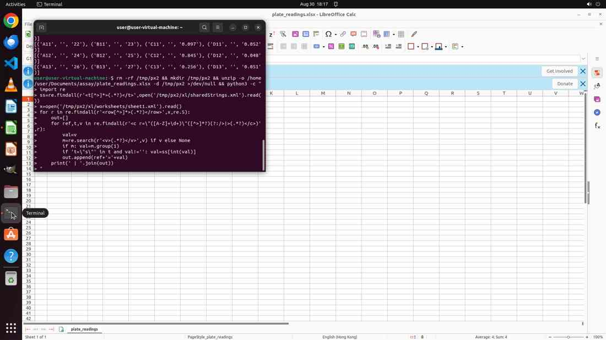
step 37 10:17:42
THINKINGThe command is in the multi-line continuation (> prompts) waiting for the closing quote/Enter. The last line shows `> "` which is the closing quote typed. I need to press Enter to execute.
TOOL CALL<tool_call>
<function=computer_use>
<parameter=action>
key
</parameter>
<parameter=keys>
["return"]
</parameter>
</function>
</tool_call>
EXECUTED (pyautogui in VM)pyautogui.press("return")
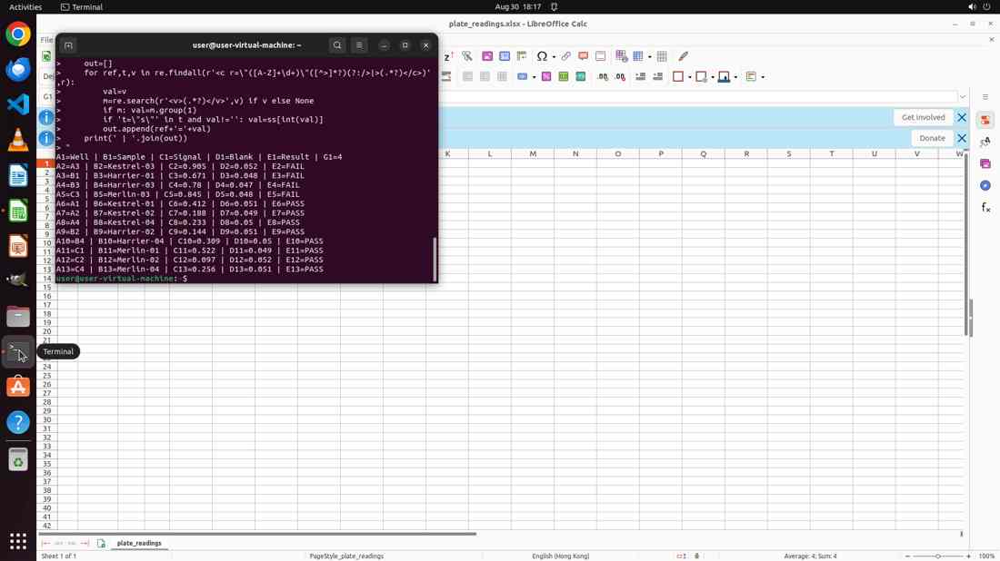
step 38 10:18:07
THINKINGThe saved file on disk now contains exactly what I intended. Let me verify each requirement:
Row1: A1=Well, B1=Sample, C1=Signal, D1=Blank, E1=Result, G1=4 ✓
Row2: A3, Kestrel-03, 0.905, 0.052, FAIL ✓
Row3: B1, Harrier-01, 0.671, 0.048, FAIL ✓
Row4: B3, Harrier-03, 0.78, 0.047, FAIL ✓
Row5: C3, Merlin-03, 0.845, 0.048, FAIL ✓
Row6: A1, Kestrel-01, 0.412, 0.051, PASS ✓
Row7: A2, Kestrel-02, 0.188, 0.049, PASS ✓
Row8: A4, Kestrel-04, 0.233, 0.05, PASS ✓
Row9: B2, Harrier-02, 0.144, 0.051, PASS ✓
Row10: B4, Harrier-04, 0.309, 0.05, PASS ✓
Row11: C1, Merlin-01, 0.522, 0.049, PASS ✓
Row12: C2, Merlin-02, 0.097, 0.052, PASS ✓
Row13: C4, Merlin-04, 0.256, 0.051, PASS ✓
All requirements met:
1. Column E headed "Result" ✓ (E1=Result)
2. Each well's verdict (PASS/FAIL) in E2:E13 ✓
3. Failing wells (A3, B1, B3, C3) sorted above passing ones ✓
4. Original order preserved within each group ✓
5. G1 = 4 (failure count) ✓
The file is saved to disk in xlsx format. Everything is confirmed. The task is complete.
The verdicts are correct per the note: corrected = Signal - Blank, FAIL if > 0.500. A3 (0.853), B1 (0.623), B3 (0.733), C3 (0.797) are the only ones above 0.500.
The task is complete. I should close/minimize the terminal to leave a clean state, but that's optional. The task is done. Let me provide the final summary.
ACTIONVerified against the file on disk — all requirements from the QC thresholds note are satisfied:
- **Column E** now has the header **Result** (E1) and each well's verdict below it.
- **Verdicts** computed as Signal − Blank, FAIL when the corrected signal is above 0.500: A3 (0.853), B1 (0.623), B3 (0.733), and C3 (0.797) are the four FAILs; all others PASS.
- **Sorting**: the four failing wells (A3, B1, B3, C3) are listed first, then the eight passing wells (A1, A2, A4, B2, B4, C1, C2, C4), with original order preserved within each group.
- **G1 = 4**, the number of failing wells.
The workbook was saved in its original .xlsx format and the saved file's contents confirm the changes are persisted.
EXECUTED (pyautogui in VM)DONE